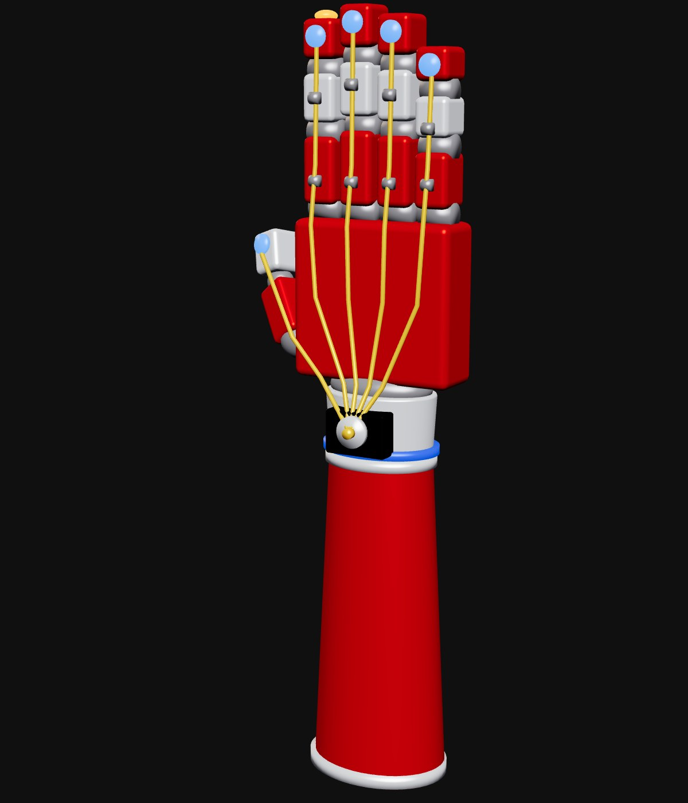
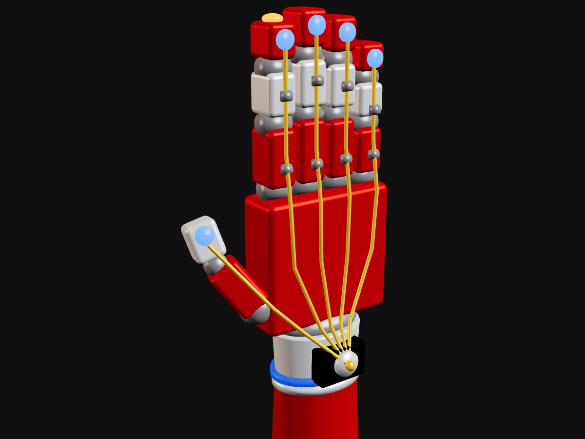
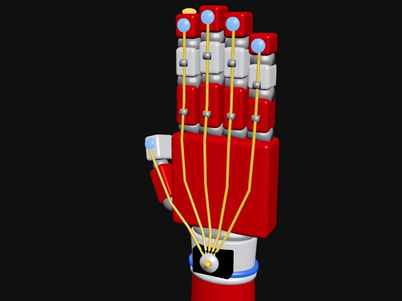
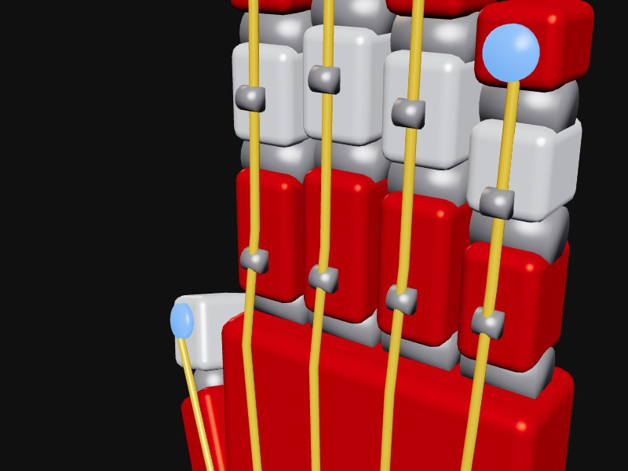
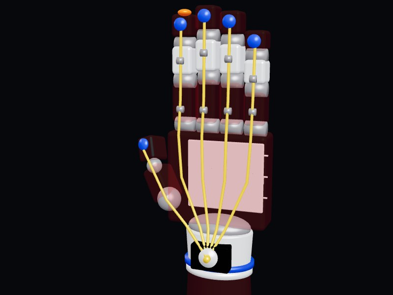
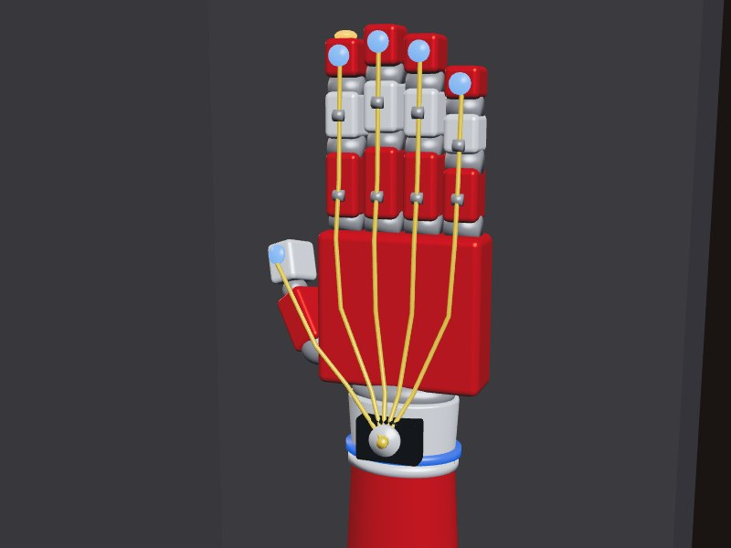

Vida diaria
Una amputación transradial cambia tareas simples —sostener, sujetar, manipular objetos— que antes no requerían pensarse dos veces.

Una mano accesible para recuperar el agarre
Autor: Diego Castillo Mota
Las opciones ortopédicas funcionales suelen costar demasiado para la mayoría de las personas que las necesitan, y las alternativas más accesibles —como los ganchos mecánicos— ofrecen poca utilidad real en las tareas del día a día.
Prótesis Viva presenta una interfaz biomecánica y ergonómica que muestra, de forma clara y cercana, cómo es posible restituir el agarre: una base para seguir pensando en soluciones accesibles.
Una amputación transradial cambia tareas simples —sostener, sujetar, manipular objetos— que antes no requerían pensarse dos veces.
El precio de una prótesis funcional deja fuera a muchas personas, especialmente en contextos donde el acceso a seguros médicos o apoyos económicos es limitado.
No se trata solo de reemplazar una función: también de recuperar independencia y confianza en la propia imagen corporal.
Recuperar el agarre es recuperar autonomía.
El objetivo del proyecto es desarrollar un modelo 3D de prótesis de antebrazo y mano para personas con amputación transradial, que ilustre cómo recuperar el agarre, la independencia y la confianza en la imagen corporal.

La mano vibra cuando el agarre ya es firme, para que la persona sepa que el objeto no se le va a caer.
Un control permite elegir cuánto aprieta la mano: suave para un vaso, fuerte para una bolsa.
Un sensor en la yema de un dedo avisa con una luz roja y una vibración cuando lo que se toca está muy caliente.
Autonomía en la vida diaria: agarre, sujeción y manipulación de objetos comunes.
Comodidad, fuerza y movilidad articular pensadas para el uso prolongado.
La app ayuda a entender el impacto de usar una prótesis y su funcionamiento.




Requisitos: dispositivo Android, se recomienda orientación horizontal.